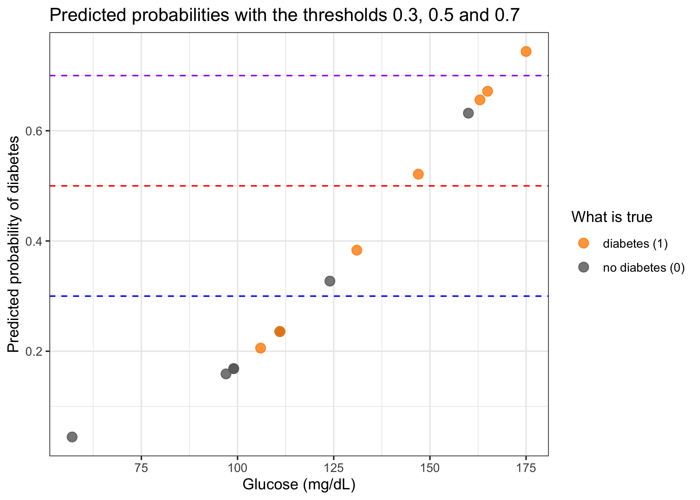
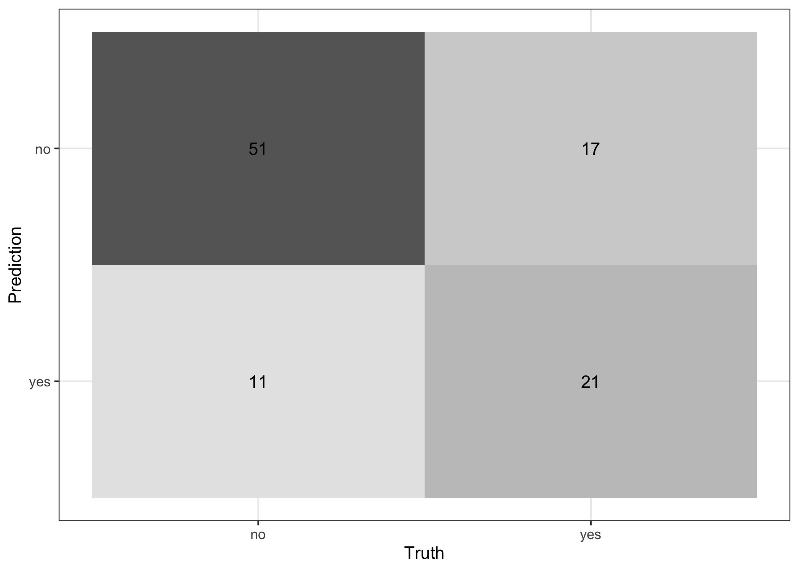
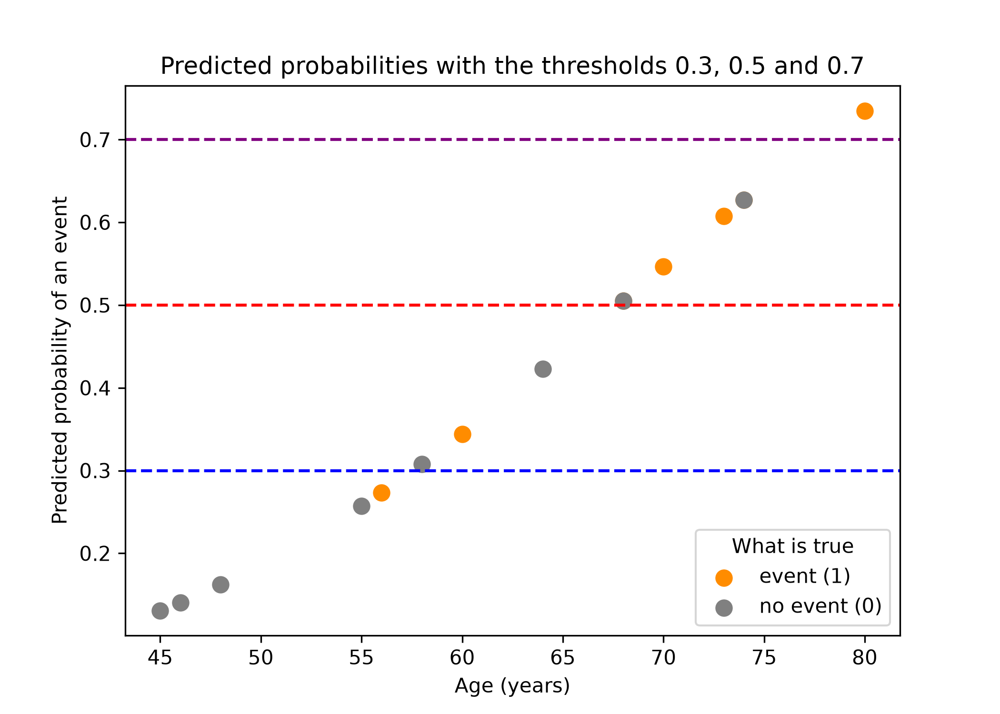
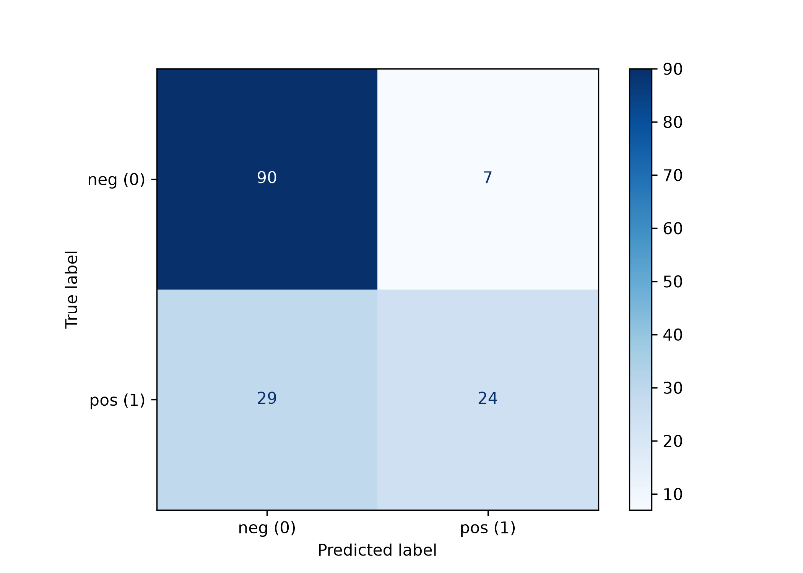

# Packages for this exercise. If one is missing, remove the # and run this line once:
# install.packages(c("tidyverse", "tidymodels"))
library(tidyverse)
library(tidymodels)
theme_set(theme_bw()) # white background for every plot
options(pillar.sigfig = 4) # show four significant figures in tablesExercise 4.3 — The decision threshold
A logistic regression outputs a probability,
\[\hat{p}(x) = P(Y = 1 \mid x),\]
but a clinic needs a decision: test this person for diabetes, or not. To turn the probability into a predicted class we choose a decision threshold. Usually:
- if \(\hat{p}(x) \geq 0.5\), predict 1 (diabetes);
- if \(\hat{p}(x) < 0.5\), predict 0 (no diabetes).
But 0.5 is arbitrary. Changing the threshold changes how many true positives, false positives, true negatives and false negatives the model makes, and so which mistakes it makes.
Theory: decision threshold; confusion table; true and false positives and negatives; sensitivity and specificity; the cost of each kind of mistake.
NoteThe plots are for looking at
The code for every plot is folded away just above it, in case you are curious, and all of it is in the notebook linked at the top of each tab. You are not expected to write it yourself.
Download this exercise as an R Markdown notebook (.Rmd): the text and every code cell of the R version, including the code for the plots, with the blanks left for you to fill in. Open it in Positron or RStudio and run it a chunk at a time.
Packages and data
The same 750 people and the same split as Exercises 4.1 and 4.2. We add a column diabetes_dummy, the outcome coded 1 for pos and 0 for neg, which makes the counting below easier to read.
diabetes <- read_csv("data/diabetes.csv") |>
select(glucose, mass, age, diabetes) |>
filter(glucose > 0, mass > 0) |> # remove the impossible zeros
mutate(diabetes = factor(diabetes, levels = c("neg", "pos")),
diabetes_dummy = if_else(diabetes == "pos", 1, 0))
test_rows <- seq(1, nrow(diabetes), by = 5) # every fifth person is held back
train <- diabetes[-test_rows, ]
test <- diabetes[test_rows, ]Part 1 — From a probability to a predicted class
Fit the logistic regression from Exercise 4.2 on the training rows:
log_fit <- logistic_reg(mode = "classification") |>
set_engine("glm") |>
fit(diabetes ~ glucose, data = train)
tidy(log_fit)#> # A tibble: 2 × 5
#> term estimate std.error statistic p.value
#> <chr> <dbl> <dbl> <dbl> <dbl>
#> 1 (Intercept) -5.064 0.4485 -11.29 1.438e-29
#> 2 glucose 0.03503 0.003359 10.43 1.864e-25To make it easy to follow, predict the probability of diabetes for 15 people from the test set only: the patients in rows 26 to 40.
patients15 <- test |>
slice(26:40)
prediction_15 <- predict(log_fit, new_data = patients15, type = "prob") |>
rename(prob = .pred_pos) |>
select(prob) |>
bind_cols(patients15)
prediction_15 |>
select(glucose, diabetes_dummy, prob)#> # A tibble: 15 × 3
#> glucose diabetes_dummy prob
#> <dbl> <dbl> <dbl>
#> 1 57 0 0.04447
#> 2 163 1 0.6560
#> 3 111 0 0.2358
#> 4 99 0 0.1685
#> 5 111 0 0.2358
#> 6 97 0 0.1589
#> 7 165 1 0.6716
#> 8 131 1 0.3833
#> 9 124 0 0.3272
#> 10 160 0 0.6319
#> 11 111 1 0.2358
#> 12 147 1 0.5212
#> 13 106 1 0.2057
#> 14 175 1 0.7438
#> 15 99 0 0.1685Now turn each probability into a predicted class at three thresholds: 0.3, 0.5 and 0.7. A person is predicted to have diabetes (1) when their probability is at or above the threshold:
prediction_15 <- prediction_15 |>
mutate(class_0.3 = if_else(prob >= 0.3, 1, 0),
class_0.5 = if_else(prob >= 0.5, 1, 0),
class_0.7 = if_else(prob >= 0.7, 1, 0))
prediction_15 |>
select(glucose, diabetes_dummy, prob, class_0.3, class_0.5, class_0.7)#> # A tibble: 15 × 6
#> glucose diabetes_dummy prob class_0.3 class_0.5 class_0.7
#> <dbl> <dbl> <dbl> <dbl> <dbl> <dbl>
#> 1 57 0 0.04447 0 0 0
#> 2 163 1 0.6560 1 1 0
#> 3 111 0 0.2358 0 0 0
#> 4 99 0 0.1685 0 0 0
#> 5 111 0 0.2358 0 0 0
#> 6 97 0 0.1589 0 0 0
#> 7 165 1 0.6716 1 1 0
#> 8 131 1 0.3833 1 0 0
#> 9 124 0 0.3272 1 0 0
#> 10 160 0 0.6319 1 1 0
#> 11 111 1 0.2358 0 0 0
#> 12 147 1 0.5212 1 1 0
#> 13 106 1 0.2057 0 0 0
#> 14 175 1 0.7438 1 1 1
#> 15 99 0 0.1685 0 0 0Here are the 15 predicted probabilities, coloured by what is actually true, with the three thresholds as dashed lines. Everyone above a line is predicted to have diabetes at that threshold. The points follow the sigmoid curve from Exercise 4.2.
Code for this plot (optional)
prediction_15 |>
mutate(truth = if_else(diabetes_dummy == 1, "diabetes (1)", "no diabetes (0)")) |>
ggplot(aes(x = glucose, y = prob, colour = truth)) +
geom_point(size = 3, alpha = 0.8) +
geom_hline(yintercept = 0.3, colour = "blue", linetype = "dashed") +
geom_hline(yintercept = 0.5, colour = "red", linetype = "dashed") +
geom_hline(yintercept = 0.7, colour = "purple", linetype = "dashed") +
scale_colour_manual(values = c("darkorange", "grey40")) +
labs(x = "Glucose (mg/dL)", y = "Predicted probability of diabetes",
colour = "What is true",
title = "Predicted probabilities with the thresholds 0.3, 0.5 and 0.7")
ImportantLearning points
- A classifier gives a probability; a threshold turns it into a predicted class.
- The threshold is a choice, not part of the model. 0.5 is only a convention.
- Lowering the threshold predicts diabetes for more people; raising it, for fewer.
Part 2 — Confusion tables, sensitivity and specificity
Each person ends up in one of four boxes, depending on what is true and what the model predicted:
| Predicted 1 (diabetes) | Predicted 0 (no diabetes) | |
|---|---|---|
| Truly 1 | True positive (TP) | False negative (FN): a case missed |
| Truly 0 | False positive (FP): a false alarm | True negative (TN) |
This is the confusion table. On paper first: use the table of 15 people above to count TP, FP, FN and TN at the threshold 0.5. Then check with code.
table(True = prediction_15$diabetes_dummy, Predicted = prediction_15$class_0.5)#> Predicted
#> True 0 1
#> 0 7 1
#> 1 3 4At 0.5 there are 4 true positives, 1 false positive, 3 false negatives and 7 true negatives. Now count all four boxes for the three thresholds side by side. Two summaries of the table are used everywhere in medicine:
\[\text{Sensitivity} = \frac{TP}{TP + FN} \qquad\qquad \text{Specificity} = \frac{TN}{TN + FP}\]
- Sensitivity: of the people who really have diabetes, the proportion the model catches.
- Specificity: of the people who really do not, the proportion the model correctly leaves alone.
Complete the code so that it counts the false negatives and computes the specificity:
# Replace every ______ below, then run this cell.
threshold_compare <- prediction_15 |>
pivot_longer(c(class_0.3, class_0.5, class_0.7),
names_to = "threshold", values_to = "predicted") |>
group_by(threshold) |>
summarise(TP = sum(diabetes_dummy == 1 & predicted == 1),
FP = sum(diabetes_dummy == 0 & predicted == 1),
FN = sum(______),
TN = sum(diabetes_dummy == 0 & predicted == 0)) |>
mutate(sensitivity = TP / (TP + FN),
specificity = ______)
threshold_compare
TipStuck?
A false negative is a person who truly has diabetes (diabetes_dummy == 1) but was predicted not to (predicted == 0). Specificity uses TN and FP, in the same way as sensitivity uses TP and FN.
Changing the threshold changes the kind of mistakes the model makes. A low threshold catches more of the people with diabetes (higher sensitivity) at the price of more false alarms. A high threshold raises fewer false alarms (higher specificity) but misses more cases. At 0.7 this model misses six of the seven people with diabetes.
ImportantLearning points
- The confusion table counts true positives, false positives, false negatives and true negatives.
- Sensitivity = TP / (TP + FN); specificity = TN / (TN + FP).
- Lowering the threshold raises sensitivity and lowers specificity, and the other way round.
Part 3 — The packaged version, on all 150 test patients
Fifteen people are enough to count by hand, not to judge a model. Whenever you report a classification model you will build a confusion table, and packages already do it for you. In tidymodels it is conf_mat() from yardstick. It needs the truth and the predicted class as factors with the same levels:
test_preds <- predict(log_fit, new_data = test, type = "prob") |>
bind_cols(test) |>
mutate(predicted_0.5 = factor(if_else(.pred_pos >= 0.5, "pos", "neg"),
levels = c("neg", "pos")))
cm <- test_preds |>
conf_mat(truth = diabetes, estimate = predicted_0.5)
cm#> Truth
#> Prediction neg pos
#> neg 90 29
#> pos 7 24autoplot(cm, type = "heatmap")
WarningRows and columns are the other way round in Python
conf_mat() puts the prediction in the rows and the truth in the columns. scikit-learn’s confusion_matrix() does the opposite. The numbers are the same; read the labels before you read the table.
At 0.5 the model finds 24 of the 53 people with diabetes (sensitivity 0.453) and correctly leaves alone 90 of the 97 without (specificity 0.928). For a screening test, missing more than half the cases is a poor result.
Putting a price on the two mistakes. Suppose a missed case (a false negative) costs five times as much as an unnecessary test (a false positive): the disease goes untreated, while the extra test costs one appointment. Then the cost of a threshold is
\[\text{cost} = 5 \times FN + 1 \times FP\]
Work out the cost of every threshold from 0.1 to 0.9 on the test patients, and find the cheapest:
# Replace every ______ below, then run this cell.
thresholds <- tibble(threshold = seq(0.1, 0.9, by = 0.1))
threshold_costs <- thresholds |>
cross_join(test_preds) |> # every threshold with every patient
group_by(threshold) |>
summarise(FN = sum(diabetes == "pos" & .pred_pos < threshold),
FP = sum(diabetes == "neg" & .pred_pos >= threshold)) |>
mutate(cost = ______)
threshold_costsQuestion! The cost ratio of five to one was an assumption. Who should decide it, and what happens to the best threshold if a missed case costs twenty times an unnecessary test instead of five?
ImportantLearning points
- Packages build the confusion table for you:
conf_mat()in R,confusion_matrix()in Python. Check which way round the rows and columns are. - The best threshold depends on what each kind of mistake costs, which is a clinical decision, not a statistical one.
- Report the threshold together with sensitivity and specificity: a threshold on its own says nothing.
Download this exercise as a Jupyter notebook (.ipynb): the text and every code cell of the Python version, including the code for the plots, with the blanks left for you to fill in. Open it in Jupyter, VS Code or Positron and run it a cell at a time.
Packages and data
# Packages for this exercise. If one is missing, install it once from a terminal
# (in a Jupyter notebook, type %pip instead of pip):
# pip install pandas numpy matplotlib scikit-learn
import pandas as pd
import numpy as np
import matplotlib.pyplot as plt
from sklearn.linear_model import LogisticRegressionThe same 750 people and the same split as Exercises 4.1 and 4.2. We add a column diabetes_dummy, the outcome coded 1 for pos and 0 for neg, which makes the counting below easier to read.
diabetes = pd.read_csv("data/diabetes.csv")
diabetes = diabetes[["glucose", "mass", "age", "diabetes"]]
diabetes = diabetes[(diabetes["glucose"] > 0) & (diabetes["mass"] > 0)] # remove the impossible zeros
diabetes = diabetes.reset_index(drop=True)
diabetes["diabetes_dummy"] = (diabetes["diabetes"] == "pos").astype(int) # 1 = pos, 0 = neg
is_test = diabetes.index % 5 == 0 # every fifth person is held back
train = diabetes[~is_test]
test = diabetes[is_test]Part 1 — From a probability to a predicted class
Fit the logistic regression from Exercise 4.2 on the training rows:
log_fit = LogisticRegression(C=np.inf)
log_fit = log_fit.fit(train[["glucose"]], train["diabetes_dummy"])
print("intercept:", round(log_fit.intercept_[0], 4))#> intercept: -5.064print("slope: ", round(log_fit.coef_[0, 0], 4))#> slope: 0.035To make it easy to follow, predict the probability of diabetes for 15 people from the test set only: the patients in rows 26 to 40. Python counts from 0, so those are positions 25 to 39.
patients15 = test.iloc[25:40].copy()
prediction_15 = patients15.copy()
prediction_15["prob"] = log_fit.predict_proba(patients15[["glucose"]])[:, 1]
prediction_15[["glucose", "diabetes_dummy", "prob"]].round(3)#> glucose diabetes_dummy prob
#> 125 57 0 0.044
#> 130 163 1 0.656
#> 135 111 0 0.236
#> 140 99 0 0.168
#> 145 111 0 0.236
#> 150 97 0 0.159
#> 155 165 1 0.672
#> 160 131 1 0.383
#> 165 124 0 0.327
#> 170 160 0 0.632
#> 175 111 1 0.236
#> 180 147 1 0.521
#> 185 106 1 0.206
#> 190 175 1 0.744
#> 195 99 0 0.168Now turn each probability into a predicted class at three thresholds: 0.3, 0.5 and 0.7. A person is predicted to have diabetes (1) when their probability is at or above the threshold:
prediction_15["class_0.3"] = (prediction_15["prob"] >= 0.3).astype(int)
prediction_15["class_0.5"] = (prediction_15["prob"] >= 0.5).astype(int)
prediction_15["class_0.7"] = (prediction_15["prob"] >= 0.7).astype(int)
prediction_15[["glucose", "diabetes_dummy", "prob",
"class_0.3", "class_0.5", "class_0.7"]].round(3)#> glucose diabetes_dummy prob class_0.3 class_0.5 class_0.7
#> 125 57 0 0.044 0 0 0
#> 130 163 1 0.656 1 1 0
#> 135 111 0 0.236 0 0 0
#> 140 99 0 0.168 0 0 0
#> 145 111 0 0.236 0 0 0
#> 150 97 0 0.159 0 0 0
#> 155 165 1 0.672 1 1 0
#> 160 131 1 0.383 1 0 0
#> 165 124 0 0.327 1 0 0
#> 170 160 0 0.632 1 1 0
#> 175 111 1 0.236 0 0 0
#> 180 147 1 0.521 1 1 0
#> 185 106 1 0.206 0 0 0
#> 190 175 1 0.744 1 1 1
#> 195 99 0 0.168 0 0 0Here are the 15 predicted probabilities, coloured by what is actually true, with the three thresholds as dashed lines. Everyone above a line is predicted to have diabetes at that threshold. The points follow the sigmoid curve from Exercise 4.2.
Code for this plot (optional)
has_diabetes = prediction_15["diabetes_dummy"] == 1
fig, ax = plt.subplots()
ax.scatter(prediction_15.loc[has_diabetes, "glucose"], prediction_15.loc[has_diabetes, "prob"],
color="darkorange", s=60, label="diabetes (1)")
ax.scatter(prediction_15.loc[~has_diabetes, "glucose"], prediction_15.loc[~has_diabetes, "prob"],
color="grey", s=60, label="no diabetes (0)")
ax.axhline(0.3, color="blue", linestyle="--")
ax.axhline(0.5, color="red", linestyle="--")
ax.axhline(0.7, color="purple", linestyle="--")
ax.set_xlabel("Glucose (mg/dL)")
ax.set_ylabel("Predicted probability of diabetes")
ax.set_title("Predicted probabilities with the thresholds 0.3, 0.5 and 0.7")
ax.legend(title="What is true")
plt.show()
ImportantLearning points
- A classifier gives a probability; a threshold turns it into a predicted class.
- The threshold is a choice, not part of the model. 0.5 is only a convention.
- Lowering the threshold predicts diabetes for more people; raising it, for fewer.
Part 2 — Confusion tables, sensitivity and specificity
Each person ends up in one of four boxes, depending on what is true and what the model predicted:
| Predicted 1 (diabetes) | Predicted 0 (no diabetes) | |
|---|---|---|
| Truly 1 | True positive (TP) | False negative (FN): a case missed |
| Truly 0 | False positive (FP): a false alarm | True negative (TN) |
This is the confusion table. On paper first: use the table of 15 people above to count TP, FP, FN and TN at the threshold 0.5. Then check with code.
pd.crosstab(prediction_15["diabetes_dummy"], prediction_15["class_0.5"],
rownames=["True"], colnames=["Predicted"])#> Predicted 0 1
#> True
#> 0 7 1
#> 1 3 4At 0.5 there are 4 true positives, 1 false positive, 3 false negatives and 7 true negatives. Now count all four boxes for the three thresholds side by side. Two summaries of the table are used everywhere in medicine:
\[\text{Sensitivity} = \frac{TP}{TP + FN} \qquad\qquad \text{Specificity} = \frac{TN}{TN + FP}\]
- Sensitivity: of the people who really have diabetes, the proportion the model catches.
- Specificity: of the people who really do not, the proportion the model correctly leaves alone.
Complete the code so that it counts the false negatives and computes the specificity:
# Replace every ______ below, then run this cell.
rows = []
for threshold in ["0.3", "0.5", "0.7"]:
truth = prediction_15["diabetes_dummy"]
predicted = prediction_15["class_" + threshold]
rows.append({"threshold": threshold,
"TP": ((truth == 1) & (predicted == 1)).sum(),
"FP": ((truth == 0) & (predicted == 1)).sum(),
"FN": (______).sum(),
"TN": ((truth == 0) & (predicted == 0)).sum()})
threshold_compare = pd.DataFrame(rows)
threshold_compare["sensitivity"] = threshold_compare["TP"] / (threshold_compare["TP"] + threshold_compare["FN"])
threshold_compare["specificity"] = ______
threshold_compare.round(3)
TipStuck?
A false negative is a person who truly has diabetes (truth == 1) but was predicted not to (predicted == 0). Specificity uses the TN and FP columns, in the same way as sensitivity uses TP and FN.
Changing the threshold changes the kind of mistakes the model makes. A low threshold catches more of the people with diabetes (higher sensitivity) at the price of more false alarms. A high threshold raises fewer false alarms (higher specificity) but misses more cases. At 0.7 this model misses six of the seven people with diabetes.
ImportantLearning points
- The confusion table counts true positives, false positives, false negatives and true negatives.
- Sensitivity = TP / (TP + FN); specificity = TN / (TN + FP).
- Lowering the threshold raises sensitivity and lowers specificity, and the other way round.
Part 3 — The packaged version, on all 150 test patients
Fifteen people are enough to count by hand, not to judge a model. Whenever you report a classification model you will build a confusion table, and packages already do it for you. In scikit-learn it is confusion_matrix():
from sklearn.metrics import confusion_matrix, ConfusionMatrixDisplay
test_preds = test.copy()
test_preds["prob"] = log_fit.predict_proba(test[["glucose"]])[:, 1]
test_preds["predicted_0.5"] = (test_preds["prob"] >= 0.5).astype(int)
cm = confusion_matrix(test_preds["diabetes_dummy"], test_preds["predicted_0.5"])
cm#> array([[90, 7],
#> [29, 24]])display = ConfusionMatrixDisplay(cm, display_labels=["neg (0)", "pos (1)"])
display = display.plot(cmap="Blues")
plt.show()
WarningRows and columns are the other way round in R
confusion_matrix() puts the truth in the rows and the prediction in the columns. tidymodels’ conf_mat() does the opposite. The numbers are the same; read the labels before you read the table.
At 0.5 the model finds 24 of the 53 people with diabetes (sensitivity 0.453) and correctly leaves alone 90 of the 97 without (specificity 0.928). For a screening test, missing more than half the cases is a poor result.
Putting a price on the two mistakes. Suppose a missed case (a false negative) costs five times as much as an unnecessary test (a false positive): the disease goes untreated, while the extra test costs one appointment. Then the cost of a threshold is
\[\text{cost} = 5 \times FN + 1 \times FP\]
Work out the cost of every threshold from 0.1 to 0.9 on the test patients, and find the cheapest:
# Replace every ______ below, then run this cell.
rows = []
for threshold in np.round(np.arange(0.1, 1.0, 0.1), 1):
truth = test_preds["diabetes_dummy"]
prob = test_preds["prob"]
FN = ((truth == 1) & (prob < threshold)).sum()
FP = ((truth == 0) & (prob >= threshold)).sum()
rows.append({"threshold": threshold, "FN": FN, "FP": FP, "cost": ______})
threshold_costs = pd.DataFrame(rows)
threshold_costsQuestion! The cost ratio of five to one was an assumption. Who should decide it, and what happens to the best threshold if a missed case costs twenty times an unnecessary test instead of five?
ImportantLearning points
- Packages build the confusion table for you:
conf_mat()in R,confusion_matrix()in Python. Check which way round the rows and columns are. - The best threshold depends on what each kind of mistake costs, which is a clinical decision, not a statistical one.
- Report the threshold together with sensitivity and specificity: a threshold on its own says nothing.
Stretch
NoteStretch — choose the threshold honestly
The cheapest threshold above was chosen by looking at the test patients, and then judged on the same test patients. Choose it on the training rows instead, then apply it once to the test patients. Is the cost still 71? Why is this the honest way round?